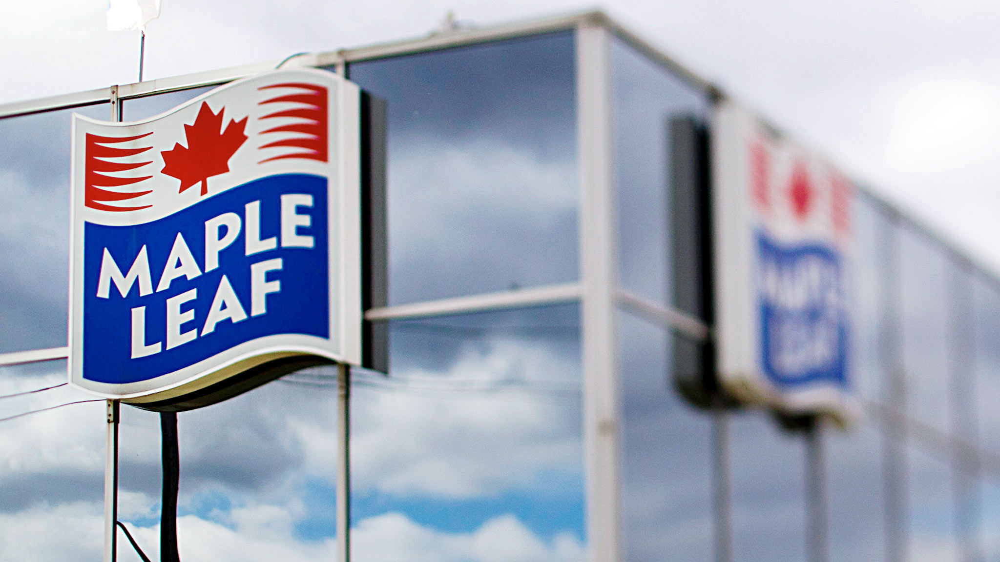
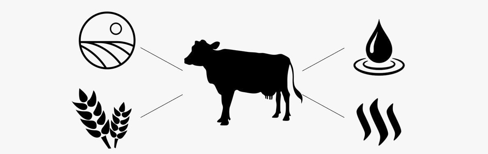

Now more than ever we are beginning to see that our practices in the meat production industry have become unsustainable. The use of land, consumption of water and feed, and production of methane have all become sustainability issues. These factors will cause the industry to change drastically over the next ten years as externalities are realized and common goods are depleted.
Land is an integral resource in agriculture and is often seen as limiting factor in the growth of the industry. 26% of the planet’s ice-free land is used for livestock grazing and in order to keep up with industry growth, 13 billion hectares of forest area is converted for agricultural use. This level of growth is unsustainable for multiple reasons and soon this growth will be too costly for companies and consumers to bear. In the next ten years, we will see this economic infeasibility come to fruition and industry leaders must plan to hedge against this risk.
Land consumption is largely due to the amount of food needed for livestock. If the land that is used to grow food for livestock was used for direct human consumption, we would be able to feed 9 billion people. Feeding livestock is extremely costly to society but remains to be an economically feasible option for farmers. The industry must adapt now before they are forced through fiscal means.
Water is unequivocally the world most undervalued resource. An astounding amount of water is funneled into livestock both directly and indirectly through their food. Major metropolitan cities throughout the world have already approached points of desperation. It is only a matter of time before these droughts hit farmlands and leave the industry with a demand for change. It is up to industry leaders to be proactive and face these issues before it’s too late
18% of the worlds green house gas emissions are emitted by the agriculture industry, most of which is livestock. 34 Kg of CO2 is produced per Kg of beef while the number goes down to 4 for chickens. This gas output is greater than the entire automotive industry, however cars remain a focus of the public eye. Industry and consumers must change their habits to reflect the cost of the externalities caused by livestock.
The externalities and use of common goods by the agriculture and livestock industry is something the world can no longer ignore. At the forefront of this issue is the change in consumer preferences. As an industry leader, it is important to stay ahead of changes that will come and the diminishing feasibility of livestock prices is an easily addressable issue.